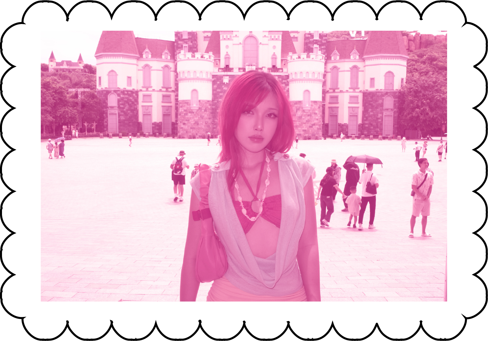

I am a 2D/3D visual creative working across illustration, animation, and 3D production, with a focus on mascot design, character-driven imagery, and brand storytelling. Growing up between analogue media and early digital culture has shaped my interest in Y2K aesthetics, nostalgic visual textures, bold colour, and playful graphic language. I enjoy building vibrant visual worlds that combine contemporary design with familiar references from the past, transforming ideas into distinctive characters, expressive imagery, and cohesive brand experiences that feel energetic, approachable, and memorable.

 1/3
1/3